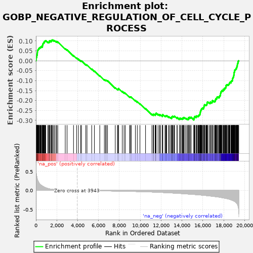
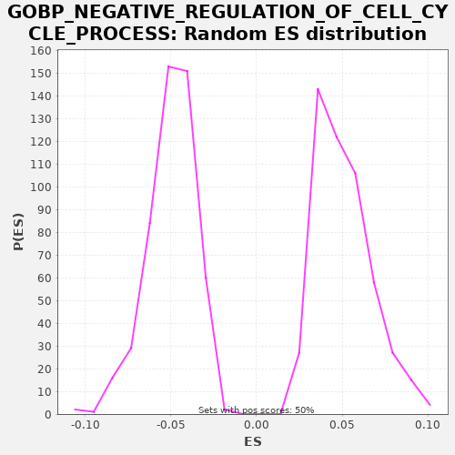

| | | Dataset | X_enriched_genes copy |
| Phenotype | NoPhenotypeAvailable |
| Upregulated in class | na_neg |
| GeneSet | GOBP_NEGATIVE_REGULATION_OF_CELL_CYCLE_PROCESS |
| Enrichment Score (ES) | -0.29777578 |
| Normalized Enrichment Score (NES) | -5.9929795 |
| Nominal p-value | 0.0 |
| FDR q-value | 0.0 |
| FWER p-Value | 0.0 |
Table: GSEA Results Summary

Fig 1: Enrichment plot: GOBP_NEGATIVE_REGULATION_OF_CELL_CYCLE_PROCESS
Profile of the Running ES Score & Positions of GeneSet Members on the Rank Ordered List
| SYMBOL | RANK IN GENE LIST | RANK METRIC SCORE | RUNNING ES | CORE ENRICHMENT | | 1 | MIF | 8 | 0.545 | 0.0029 | No |
| 2 | PSMA7 | 9 | 0.534 | 0.0062 | No |
| 3 | PRMT1 | 37 | 0.434 | 0.0081 | No |
| 4 | PSMB6 | 38 | 0.434 | 0.0114 | No |
| 5 | CDC20 | 40 | 0.429 | 0.0146 | No |
| 6 | PSMA3 | 55 | 0.403 | 0.0172 | No |
| 7 | PSMB3 | 62 | 0.380 | 0.0202 | No |
| 8 | PSMA2 | 73 | 0.372 | 0.0230 | No |
| 9 | PSMB2 | 75 | 0.371 | 0.0262 | No |
| 10 | PSMA6 | 96 | 0.351 | 0.0285 | No |
| 11 | PSMD7 | 123 | 0.314 | 0.0304 | No |
| 12 | HSP90AB1 | 127 | 0.310 | 0.0335 | No |
| 13 | RPL26 | 136 | 0.298 | 0.0364 | No |
| 14 | PSMB4 | 138 | 0.297 | 0.0397 | No |
| 15 | PSMD8 | 147 | 0.289 | 0.0426 | No |
| 16 | AURKAIP1 | 150 | 0.283 | 0.0458 | No |
| 17 | PSMB1 | 151 | 0.283 | 0.0491 | No |
| 18 | PSMB5 | 161 | 0.276 | 0.0519 | No |
| 19 | PSMA4 | 183 | 0.260 | 0.0541 | No |
| 20 | PSMG2 | 216 | 0.241 | 0.0557 | No |
| 21 | CHMP2A | 239 | 0.231 | 0.0579 | No |
| 22 | CDK4 | 257 | 0.219 | 0.0603 | No |
| 23 | PSMA1 | 275 | 0.206 | 0.0627 | No |
| 24 | RPL23 | 333 | 0.181 | 0.0630 | No |
| 25 | PSME1 | 348 | 0.175 | 0.0656 | No |
| 26 | PSMD3 | 400 | 0.158 | 0.0662 | No |
| 27 | NOP53 | 420 | 0.155 | 0.0685 | No |
| 28 | PSMC5 | 461 | 0.145 | 0.0697 | No |
| 29 | BABAM1 | 522 | 0.135 | 0.0699 | No |
| 30 | PSMD6 | 529 | 0.134 | 0.0729 | No |
| 31 | BABAM2 | 622 | 0.115 | 0.0714 | No |
| 32 | NAA10 | 629 | 0.114 | 0.0744 | No |
| 33 | PCBP4 | 634 | 0.113 | 0.0775 | No |
| 34 | RBX1 | 657 | 0.108 | 0.0796 | No |
| 35 | RGCC | 660 | 0.108 | 0.0828 | No |
| 36 | CDK5RAP3 | 671 | 0.107 | 0.0856 | No |
| 37 | UXT | 696 | 0.103 | 0.0876 | No |
| 38 | MAD2L2 | 731 | 0.097 | 0.0892 | No |
| 39 | PSMC3 | 747 | 0.095 | 0.0917 | No |
| 40 | PSMA5 | 789 | 0.089 | 0.0928 | No |
| 41 | CDKN2A | 810 | 0.086 | 0.0951 | No |
| 42 | PSMC6 | 818 | 0.085 | 0.0980 | No |
| 43 | PSME2 | 864 | 0.079 | 0.0990 | No |
| 44 | PSMB7 | 901 | 0.074 | 0.1004 | No |
| 45 | LCMT1 | 942 | 0.069 | 0.1016 | No |
| 46 | PTTG1 | 1142 | 0.051 | 0.0945 | No |
| 47 | NPM1 | 1217 | 0.045 | 0.0940 | No |
| 48 | PSMD11 | 1269 | 0.042 | 0.0946 | No |
| 49 | PSMD4 | 1284 | 0.041 | 0.0972 | No |
| 50 | CDK9 | 1293 | 0.040 | 0.1001 | No |
| 51 | PSMC2 | 1356 | 0.037 | 0.1001 | No |
| 52 | PSMD14 | 1461 | 0.032 | 0.0980 | No |
| 53 | CDC25C | 1470 | 0.032 | 0.1009 | No |
| 54 | NABP2 | 1497 | 0.031 | 0.1028 | No |
| 55 | BAX | 1551 | 0.029 | 0.1033 | No |
| 56 | FBXO31 | 1584 | 0.028 | 0.1050 | No |
| 57 | PSMC4 | 1690 | 0.025 | 0.1028 | No |
| 58 | PSMD2 | 1778 | 0.023 | 0.1015 | No |
| 59 | MIIP | 1919 | 0.020 | 0.0975 | No |
| 60 | KLHL22 | 1992 | 0.018 | 0.0971 | No |
| 61 | PSMD10 | 2096 | 0.017 | 0.0950 | No |
| 62 | PRMT2 | 2811 | 0.008 | 0.0610 | No |
| 63 | MRNIP | 2986 | 0.007 | 0.0552 | No |
| 64 | PCGF6 | 3605 | 0.002 | 0.0263 | No |
| 65 | NUBP1 | 3901 | 0.000 | 0.0142 | No |
| 66 | GJC2 | 4072 | -0.001 | 0.0086 | No |
| 67 | FAM107A | 4289 | -0.002 | 0.0006 | No |
| 68 | CTDSPL | 4367 | -0.002 | -0.0001 | No |
| 69 | RING1 | 4782 | -0.005 | -0.0184 | No |
| 70 | SUSD2 | 4897 | -0.005 | -0.0211 | No |
| 71 | GPR132 | 5347 | -0.007 | -0.0412 | No |
| 72 | MYO16 | 5605 | -0.008 | -0.0514 | No |
| 73 | PSMB11 | 6122 | -0.011 | -0.0750 | No |
| 74 | CNOT8 | 6562 | -0.012 | -0.0946 | No |
| 75 | BRCC3 | 6679 | -0.013 | -0.0974 | No |
| 76 | USP44 | 6746 | -0.013 | -0.0975 | No |
| 77 | CRADD | 6866 | -0.014 | -0.1004 | No |
| 78 | CHMP4C | 7607 | -0.017 | -0.1358 | No |
| 79 | FBXO43 | 7816 | -0.018 | -0.1433 | No |
| 80 | CCNB1 | 7856 | -0.018 | -0.1421 | No |
| 81 | PSMC1 | 7926 | -0.019 | -0.1424 | No |
| 82 | TMEM67 | 7929 | -0.019 | -0.1392 | No |
| 83 | ZFYVE19 | 8281 | -0.021 | -0.1542 | No |
| 84 | MLXIPL | 8450 | -0.021 | -0.1597 | No |
| 85 | GADD45A | 8569 | -0.022 | -0.1626 | No |
| 86 | FBXO7 | 8986 | -0.025 | -0.1810 | No |
| 87 | FGF10 | 9055 | -0.025 | -0.1812 | No |
| 88 | ORC1 | 9143 | -0.026 | -0.1825 | No |
| 89 | RAD1 | 9534 | -0.029 | -0.1995 | No |
| 90 | PSMF1 | 9718 | -0.030 | -0.2058 | No |
| 91 | FZD9 | 9975 | -0.032 | -0.2159 | No |
| 92 | GPNMB | 10509 | -0.036 | -0.2404 | No |
| 93 | CCND1 | 11121 | -0.042 | -0.2690 | No |
| 94 | TEX14 | 11249 | -0.043 | -0.2723 | No |
| 95 | CDK6 | 11268 | -0.044 | -0.2700 | No |
| 96 | ATF5 | 11289 | -0.044 | -0.2677 | No |
| 97 | SETMAR | 11435 | -0.045 | -0.2720 | No |
| 98 | TPRA1 | 11462 | -0.046 | -0.2700 | No |
| 99 | PSMB9 | 11477 | -0.046 | -0.2675 | No |
| 100 | PML | 11498 | -0.046 | -0.2652 | No |
| 101 | MAD2L1BP | 11523 | -0.046 | -0.2632 | No |
| 102 | RINT1 | 11703 | -0.049 | -0.2692 | No |
| 103 | CARM1 | 11844 | -0.051 | -0.2732 | No |
| 104 | CDT1 | 11850 | -0.051 | -0.2702 | No |
| 105 | FBXL7 | 11958 | -0.052 | -0.2725 | No |
| 106 | RPS27L | 12119 | -0.054 | -0.2775 | No |
| 107 | ARID3A | 12137 | -0.054 | -0.2751 | No |
| 108 | XRCC3 | 12149 | -0.055 | -0.2724 | No |
| 109 | BCL6 | 12165 | -0.055 | -0.2699 | No |
| 110 | PSMB8 | 12373 | -0.058 | -0.2774 | No |
| 111 | BRSK1 | 12436 | -0.059 | -0.2773 | No |
| 112 | PPP2R5B | 12495 | -0.060 | -0.2770 | No |
| 113 | FOXO4 | 12534 | -0.060 | -0.2757 | No |
| 114 | PLAGL1 | 12712 | -0.063 | -0.2817 | No |
| 115 | NAE1 | 12790 | -0.064 | -0.2824 | No |
| 116 | PSMB10 | 12923 | -0.065 | -0.2860 | No |
| 117 | PINX1 | 13014 | -0.067 | -0.2874 | No |
| 118 | TOM1L1 | 13019 | -0.067 | -0.2843 | No |
| 119 | ZFP36L1 | 13031 | -0.067 | -0.2816 | No |
| 120 | PIDD1 | 13071 | -0.068 | -0.2803 | No |
| 121 | HMGN5 | 13106 | -0.069 | -0.2788 | No |
| 122 | ABRAXAS1 | 13196 | -0.070 | -0.2801 | No |
| 123 | PLK5 | 13262 | -0.071 | -0.2802 | No |
| 124 | GPER1 | 13295 | -0.072 | -0.2786 | No |
| 125 | CHEK2 | 13526 | -0.075 | -0.2873 | No |
| 126 | DCUN1D3 | 13543 | -0.076 | -0.2848 | No |
| 127 | NME6 | 13751 | -0.079 | -0.2923 | No |
| 128 | PSMD9 | 13757 | -0.079 | -0.2893 | No |
| 129 | NACC2 | 13858 | -0.081 | -0.2912 | No |
| 130 | DACT1 | 13869 | -0.081 | -0.2885 | No |
| 131 | PHC3 | 13991 | -0.083 | -0.2915 | No |
| 132 | ANAPC15 | 14054 | -0.084 | -0.2914 | No |
| 133 | BMP7 | 14067 | -0.085 | -0.2887 | No |
| 134 | PSMD12 | 14136 | -0.086 | -0.2890 | No |
| 135 | MUC1 | 14137 | -0.086 | -0.2857 | No |
| 136 | FHL1 | 14187 | -0.087 | -0.2849 | No |
| 137 | CDKN2B | 14299 | -0.090 | -0.2874 | No |
| 138 | DONSON | 14415 | -0.092 | -0.2901 | No |
| 139 | RB1 | 14535 | -0.094 | -0.2931 | No |
| 140 | SFN | 14613 | -0.096 | -0.2938 | No |
| 141 | TFAP4 | 14618 | -0.096 | -0.2907 | No |
| 142 | WEE1 | 14626 | -0.096 | -0.2878 | No |
| 143 | FZR1 | 14639 | -0.096 | -0.2851 | No |
| 144 | SOX4 | 14739 | -0.098 | -0.2869 | No |
| 145 | RNF2 | 14742 | -0.098 | -0.2837 | No |
| 146 | PSMD13 | 14853 | -0.100 | -0.2862 | No |
| 147 | CNOT10 | 14877 | -0.101 | -0.2841 | No |
| 148 | PSMD5 | 15140 | -0.106 | -0.2945 | Yes |
| 149 | E2F1 | 15150 | -0.106 | -0.2916 | Yes |
| 150 | KAT2A | 15153 | -0.106 | -0.2884 | Yes |
| 151 | RBL2 | 15182 | -0.107 | -0.2866 | Yes |
| 152 | CHFR | 15194 | -0.107 | -0.2839 | Yes |
| 153 | CNOT11 | 15206 | -0.107 | -0.2812 | Yes |
| 154 | MDM1 | 15241 | -0.108 | -0.2796 | Yes |
| 155 | OVOL1 | 15368 | -0.111 | -0.2829 | Yes |
| 156 | CHEK1 | 15376 | -0.111 | -0.2800 | Yes |
| 157 | PRKDC | 15385 | -0.111 | -0.2771 | Yes |
| 158 | TRIAP1 | 15473 | -0.113 | -0.2783 | Yes |
| 159 | PHC1 | 15546 | -0.115 | -0.2788 | Yes |
| 160 | CDC14B | 15580 | -0.116 | -0.2772 | Yes |
| 161 | KAT2B | 15594 | -0.116 | -0.2746 | Yes |
| 162 | TOM1L2 | 15626 | -0.117 | -0.2729 | Yes |
| 163 | CTDSP2 | 15677 | -0.118 | -0.2722 | Yes |
| 164 | IK | 15713 | -0.119 | -0.2708 | Yes |
| 165 | PLK3 | 15719 | -0.119 | -0.2677 | Yes |
| 166 | CNOT2 | 15744 | -0.120 | -0.2657 | Yes |
| 167 | RPA2 | 15745 | -0.120 | -0.2624 | Yes |
| 168 | SYF2 | 15761 | -0.120 | -0.2599 | Yes |
| 169 | CDC6 | 15762 | -0.120 | -0.2566 | Yes |
| 170 | APAF1 | 15791 | -0.121 | -0.2547 | Yes |
| 171 | UIMC1 | 15794 | -0.121 | -0.2515 | Yes |
| 172 | PCID2 | 15814 | -0.121 | -0.2492 | Yes |
| 173 | YAF2 | 15839 | -0.122 | -0.2472 | Yes |
| 174 | MAD2L1 | 15859 | -0.122 | -0.2449 | Yes |
| 175 | HMGA2 | 15866 | -0.122 | -0.2419 | Yes |
| 176 | CCL2 | 15902 | -0.123 | -0.2404 | Yes |
| 177 | BUB3 | 15952 | -0.125 | -0.2397 | Yes |
| 178 | TFDP2 | 15968 | -0.125 | -0.2371 | Yes |
| 179 | MAX | 16068 | -0.128 | -0.2390 | Yes |
| 180 | RBM14 | 16083 | -0.128 | -0.2364 | Yes |
| 181 | KANK2 | 16085 | -0.128 | -0.2332 | Yes |
| 182 | PTEN | 16114 | -0.129 | -0.2314 | Yes |
| 183 | CASP2 | 16115 | -0.129 | -0.2281 | Yes |
| 184 | TRIM39 | 16135 | -0.130 | -0.2257 | Yes |
| 185 | TRIP13 | 16153 | -0.130 | -0.2233 | Yes |
| 186 | KNTC1 | 16162 | -0.130 | -0.2204 | Yes |
| 187 | BMP4 | 16265 | -0.133 | -0.2225 | Yes |
| 188 | E2F6 | 16321 | -0.135 | -0.2220 | Yes |
| 189 | MDM4 | 16369 | -0.136 | -0.2212 | Yes |
| 190 | PKD2 | 16379 | -0.137 | -0.2184 | Yes |
| 191 | HUS1 | 16402 | -0.137 | -0.2162 | Yes |
| 192 | CDC7 | 16404 | -0.137 | -0.2130 | Yes |
| 193 | TERF2 | 16409 | -0.137 | -0.2099 | Yes |
| 194 | VPS4A | 16436 | -0.138 | -0.2079 | Yes |
| 195 | DAB2IP | 16501 | -0.140 | -0.2080 | Yes |
| 196 | CNOT4 | 16650 | -0.145 | -0.2124 | Yes |
| 197 | CDK2 | 16715 | -0.147 | -0.2124 | Yes |
| 198 | TAOK3 | 16724 | -0.147 | -0.2096 | Yes |
| 199 | CNOT9 | 16727 | -0.147 | -0.2064 | Yes |
| 200 | CDK2AP2 | 16859 | -0.151 | -0.2099 | Yes |
| 201 | RBBP4 | 16885 | -0.152 | -0.2079 | Yes |
| 202 | PPP1R10 | 16899 | -0.152 | -0.2053 | Yes |
| 203 | PCGF2 | 16905 | -0.152 | -0.2023 | Yes |
| 204 | PSMD1 | 16920 | -0.153 | -0.1997 | Yes |
| 205 | NABP1 | 17043 | -0.157 | -0.2028 | Yes |
| 206 | L3MBTL2 | 17141 | -0.161 | -0.2045 | Yes |
| 207 | TICRR | 17157 | -0.161 | -0.2020 | Yes |
| 208 | CNOT7 | 17205 | -0.163 | -0.2012 | Yes |
| 209 | TAOK2 | 17213 | -0.164 | -0.1982 | Yes |
| 210 | RYBP | 17217 | -0.164 | -0.1951 | Yes |
| 211 | EZH2 | 17244 | -0.165 | -0.1931 | Yes |
| 212 | E2F4 | 17255 | -0.165 | -0.1904 | Yes |
| 213 | MTBP | 17319 | -0.167 | -0.1903 | Yes |
| 214 | CDKN2D | 17342 | -0.168 | -0.1882 | Yes |
| 215 | PLK2 | 17359 | -0.169 | -0.1857 | Yes |
| 216 | BCL2 | 17367 | -0.169 | -0.1828 | Yes |
| 217 | PSME3 | 17400 | -0.170 | -0.1812 | Yes |
| 218 | EHMT2 | 17496 | -0.173 | -0.1828 | Yes |
| 219 | TERF1 | 17569 | -0.177 | -0.1833 | Yes |
| 220 | DYNC1LI1 | 17571 | -0.177 | -0.1800 | Yes |
| 221 | RAD51 | 17603 | -0.179 | -0.1784 | Yes |
| 222 | FOXN3 | 17630 | -0.180 | -0.1764 | Yes |
| 223 | PRKAR1A | 17643 | -0.180 | -0.1737 | Yes |
| 224 | DTL | 17694 | -0.183 | -0.1730 | Yes |
| 225 | ESPL1 | 17700 | -0.183 | -0.1700 | Yes |
| 226 | ZW10 | 17702 | -0.183 | -0.1668 | Yes |
| 227 | CBX3 | 17704 | -0.183 | -0.1635 | Yes |
| 228 | RFWD3 | 17728 | -0.185 | -0.1614 | Yes |
| 229 | TTK | 17737 | -0.185 | -0.1585 | Yes |
| 230 | TNKS1BP1 | 17745 | -0.186 | -0.1556 | Yes |
| 231 | EHMT1 | 17784 | -0.188 | -0.1543 | Yes |
| 232 | LIF | 17809 | -0.189 | -0.1522 | Yes |
| 233 | RAD17 | 17824 | -0.189 | -0.1497 | Yes |
| 234 | MDM2 | 17920 | -0.194 | -0.1513 | Yes |
| 235 | PLK1 | 17945 | -0.195 | -0.1493 | Yes |
| 236 | CDKN2C | 17950 | -0.195 | -0.1462 | Yes |
| 237 | BRD7 | 17957 | -0.196 | -0.1432 | Yes |
| 238 | INTS3 | 18046 | -0.200 | -0.1445 | Yes |
| 239 | CDKN1A | 18051 | -0.200 | -0.1414 | Yes |
| 240 | GTSE1 | 18065 | -0.201 | -0.1388 | Yes |
| 241 | EED | 18136 | -0.205 | -0.1391 | Yes |
| 242 | NBN | 18147 | -0.205 | -0.1364 | Yes |
| 243 | DLG1 | 18177 | -0.207 | -0.1346 | Yes |
| 244 | BUB1 | 18218 | -0.209 | -0.1334 | Yes |
| 245 | AVEN | 18220 | -0.209 | -0.1301 | Yes |
| 246 | MAD1L1 | 18221 | -0.209 | -0.1268 | Yes |
| 247 | CALR | 18222 | -0.209 | -0.1235 | Yes |
| 248 | BLM | 18285 | -0.213 | -0.1235 | Yes |
| 249 | BUB1B | 18289 | -0.214 | -0.1203 | Yes |
| 250 | E2F7 | 18339 | -0.217 | -0.1196 | Yes |
| 251 | RBBP8 | 18430 | -0.223 | -0.1210 | Yes |
| 252 | EP300 | 18471 | -0.225 | -0.1198 | Yes |
| 253 | ADAM10 | 18494 | -0.227 | -0.1176 | Yes |
| 254 | CNOT6L | 18519 | -0.229 | -0.1156 | Yes |
| 255 | RRM2 | 18548 | -0.231 | -0.1137 | Yes |
| 256 | TFDP1 | 18560 | -0.232 | -0.1110 | Yes |
| 257 | BMI1 | 18592 | -0.235 | -0.1093 | Yes |
| 258 | PSME4 | 18614 | -0.237 | -0.1071 | Yes |
| 259 | FBXO5 | 18707 | -0.245 | -0.1086 | Yes |
| 260 | RBL1 | 18722 | -0.247 | -0.1060 | Yes |
| 261 | EPC1 | 18725 | -0.247 | -0.1028 | Yes |
| 262 | ZWINT | 18751 | -0.251 | -0.1008 | Yes |
| 263 | GEN1 | 18797 | -0.256 | -0.0999 | Yes |
| 264 | NDC80 | 18836 | -0.262 | -0.0986 | Yes |
| 265 | CNOT3 | 18844 | -0.262 | -0.0956 | Yes |
| 266 | ATM | 18858 | -0.264 | -0.0930 | Yes |
| 267 | PCNA | 18860 | -0.264 | -0.0898 | Yes |
| 268 | AURKA | 18870 | -0.265 | -0.0869 | Yes |
| 269 | RBBP7 | 18899 | -0.267 | -0.0851 | Yes |
| 270 | JADE1 | 18917 | -0.269 | -0.0827 | Yes |
| 271 | ZFP36L2 | 18937 | -0.271 | -0.0804 | Yes |
| 272 | KLF4 | 18952 | -0.273 | -0.0778 | Yes |
| 273 | CNOT1 | 18965 | -0.275 | -0.0751 | Yes |
| 274 | NEK2 | 18975 | -0.276 | -0.0723 | Yes |
| 275 | TRIM37 | 18976 | -0.276 | -0.0690 | Yes |
| 276 | AURKB | 19000 | -0.279 | -0.0669 | Yes |
| 277 | CDK1 | 19001 | -0.279 | -0.0636 | Yes |
| 278 | APC | 19003 | -0.280 | -0.0604 | Yes |
| 279 | CNOT6 | 19013 | -0.281 | -0.0575 | Yes |
| 280 | E2F8 | 19041 | -0.285 | -0.0556 | Yes |
| 281 | CUL1 | 19046 | -0.287 | -0.0526 | Yes |
| 282 | CCNF | 19054 | -0.288 | -0.0496 | Yes |
| 283 | TNKS | 19055 | -0.288 | -0.0463 | Yes |
| 284 | RAD21 | 19104 | -0.298 | -0.0455 | Yes |
| 285 | CDK5RAP2 | 19124 | -0.301 | -0.0432 | Yes |
| 286 | CCP110 | 19165 | -0.309 | -0.0420 | Yes |
| 287 | BRCA1 | 19176 | -0.312 | -0.0392 | Yes |
| 288 | TAOK1 | 19224 | -0.327 | -0.0384 | Yes |
| 289 | CDC73 | 19231 | -0.329 | -0.0354 | Yes |
| 290 | MGA | 19234 | -0.329 | -0.0322 | Yes |
| 291 | ATRX | 19265 | -0.341 | -0.0305 | Yes |
| 292 | CLSPN | 19272 | -0.343 | -0.0275 | Yes |
| 293 | TPR | 19276 | -0.345 | -0.0243 | Yes |
| 294 | SPDL1 | 19312 | -0.358 | -0.0229 | Yes |
| 295 | USP47 | 19313 | -0.359 | -0.0196 | Yes |
| 296 | TOPBP1 | 19320 | -0.363 | -0.0166 | Yes |
| 297 | WAPL | 19328 | -0.369 | -0.0136 | Yes |
| 298 | CENPF | 19355 | -0.386 | -0.0117 | Yes |
| 299 | CBX5 | 19377 | -0.410 | -0.0095 | Yes |
| 300 | CDKN1B | 19379 | -0.411 | -0.0062 | Yes |
| 301 | SUZ12 | 19384 | -0.416 | -0.0032 | Yes |
| 302 | DUSP1 | 19406 | -0.444 | -0.0010 | Yes |
| 303 | BTG2 | 19444 | -0.533 | 0.0004 | Yes |
Table: GSEA details [plain text format]

Fig 2: GOBP_NEGATIVE_REGULATION_OF_CELL_CYCLE_PROCESS: Random ES distribution
Gene set null distribution of ES for GOBP_NEGATIVE_REGULATION_OF_CELL_CYCLE_PROCESS